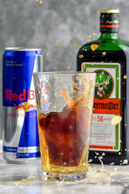

Jagerbomb

The Most Polarizing Drink On The Planet.
We've all got memories of drinking this stuff. Love it or hate it though, it gets the job done.
You may hate the taste of Jagermeister on its own, I mean I personally love it, but throwing it into an ice cold glass of red bull is absolutely delicious.
Ingredients
- 4 ounces ice cold original red bull
- 1.5 ounces ice cold Jagermeister
Steps
- Pour 4 ounces of Red Bull into your favorite glass
- Pour 1.5 ounces of Jagermeister into a shot glass
- Drop the shot glass into the Red Bull glass
- Enjoy! And DRINK RESPONSIBLY!